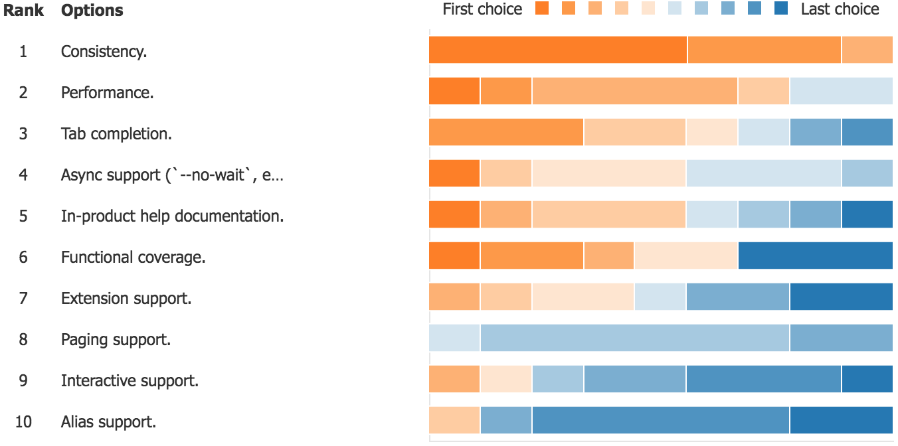

- Azure CLI Customer Insights (201805)
- Survey Results
- 1 For approximately how long have you been using Azure CLI?
- 2 How likely is it that you would recommend Azure CLI to a friend or colleague (1 is the least, 10 is the most)?
- 3 What could Azure CLI change to make you more likely to recommend it?
- 4 How would you rate the overall quality of Azure CLI (1 is the least, 10 is the most)?
- 5 What could Azure CLI change to improve its overall quality?
- 6 How well does Azure CLI meet your needs (1 is the least, 10 is the most)?
- 7 What could Azure CLI change to help meet your needs better?
- 8 What current/future Azure CLI features are most important to you?
- 9 Please describe a new feature (e.g., alias support) or design (e.g., extension support) that recently delighted you in your experience with Azure CLI.
- 10 Do you have any other recommendations, comments, questions, or concerns for the Azure CLI team?
- Build Developer Day
- Hypothesis Types
- Problem: We believe Azure CLI customers are frustrated by the rollup package because it is getting too big and unwieldy.
- Problem: We believe Azure CLI customers are frustrated when finding commands because documentation and discoverability are lacking.
- Problem: We believe Azure CLI customers are frustrated because they are overwhelmingly using scripts and the CLI is currently built more for interactive use.
- Customer Summary
- Next Steps
- Titanium Themes
- Survey Results
Azure CLI Customer Insights (201805)
Survey Results
There were 19 customer responses to the survey.
1 For approximately how long have you been using Azure CLI?
The responses were fairly spread out.
| Answer | Count |
|---|---|
| Less than 1 year | 6 |
| 1 - 2 years | 10 |
| Over 2 years | 13 |
2 How likely is it that you would recommend Azure CLI to a friend or colleague (1 is the least, 10 is the most)?
The average rating was 8.00 with the following breakdown.
| Answer | Count |
|---|---|
| 1 - 6 (detractors) | 3 (15.78%) |
| 7 - 8 (neutrals) | 8 (42.11%) |
| 9 - 10 (promoters) | 8 (42.11%) |
These results yield an approximate NPS of 26.
3 What could Azure CLI change to make you more likely to recommend it?
The following are customer verbatims (bolding applied post):
- “bash completion working faster, more coherency between outputs type (tsv, table), verbose actualy [sic] doing something useful”
- “Easier install, less state management after login”
- “Speed, tab completions sometimes take a long time.”
- “Easy to develop”
4 How would you rate the overall quality of Azure CLI (1 is the least, 10 is the most)?
The average rating was 7.95.
5 What could Azure CLI change to improve its overall quality?
The following are customer verbatims (bolding applied post):
- “it’s hard to debug problems, it’s hard to kill the process (I get it the command is still running on azure, but for Linus Torvalds sake, give me back the terminal when I press ctrl+c), there are a lot of incoherencies between longa and short params (like –resource-group –group -r -g depends on the module)”
- “Sometimes, the command name is not very accurate, align with functionality”
- “Fewer bugs, higher parity with what’s possible with the REST API and ARM templates, better consistency between components and the CLI args used”
- “On-par with PowerShell. Develop in parallel, for aome features its hard to find (missing) from one or the other.”
- “Faster“
- “Cli Explorer to find easy way to get function”
6 How well does Azure CLI meet your needs (1 is the least, 10 is the most)?
The average rating was 7.84.
7 What could Azure CLI change to help meet your needs better?
The following are customer verbatims (bolding applied post):
- “We don’t have to replicate commands very often so often the GUI is more productive.”
- “Enhance with Storage, CosmosDB, DataLakeStore etc. More into the services data-planes”
8 What current/future Azure CLI features are most important to you?
Customers were asked to rank certain features, and these were the results.

9 Please describe a new feature (e.g., alias support) or design (e.g., extension support) that recently delighted you in your experience with Azure CLI.
The following are customer verbatims (bolding applied post):
- “extensions will lead to faster developement of CLI itself so it’s a good thing to make it modular, aliases are fine, however I’m affraid [sic] that will lead to mistakes and inter-community comunications [sic] problems”
- “aks”
- “Output formats”
10 Do you have any other recommendations, comments, questions, or concerns for the Azure CLI team?
The following are customer verbatims (bolding applied post):
- “Azure CLI is cool!!!”
- “still better than powershell ^^”
- “Please bring v2.0 Support across all services”
- “Any plans to allow a single command to authenticate without
az login, e.g.az --service-principal foo --password bar webapp list?”
Build Developer Day
Hypothesis Types
- Customer: We believe that type of customers are motivated to motivation when doing job-to-be-done.
- Problem: We believe that type of customers are frustrated by job-to-be-done because of problem.
- Concept: We believe that concept will solve problem and be valuable to type of customers while doing job-to-be-done. We will know this to be true when we see criteria.
- Feature: We believe type of customers will be successful solving problem using feature while doing job-to-be-done. We will know they were successful when we see criteria.
- Business: We believe type of customers will realize business outcome by employing business action. We will know this to be true when we see criteria.
Problem: We believe Azure CLI customers are frustrated by the rollup package because it is getting too big and unwieldy.
Invalidated: customers are not frustrated by the number of command modules or the size, in general, but they are frustrated by an inability to sift through the documentation and commands to find the specific commands they need.
Customer notes:
- “The long list of command modules in CLI is ‘kind of expected’. However, the long list of services is ‘a little intimidating’. Instead of removing commands modules, maybe make a ‘simple help’ that is pared down. ‘Maybe by default
azgives a smaller list.’” - Other customers echoed that the Core should continue to be big, but maybe a have “simple help” that is pared down.
Problem: We believe Azure CLI customers are frustrated when finding commands because documentation and discoverability are lacking.
Validated: customers generally report an inability to reach a workable solution in the product or documentation alone, and they typically go somewhere like Stack Overflow for quick solutions.
Customer notes:
- Search official documentation, Stack Overflow. What search string in Google: “Azure CLI provision elastic database”.
- Stack overflow primary go to for many customers.
- “Very big on written tutorials. Likes to “block of text, and then the command”. A lot of her students prefer videos to written documentation.”
- Some customers reported preferring better in-product documentation.
Problem: We believe Azure CLI customers are frustrated because they are overwhelmingly using scripts and the CLI is currently built more for interactive use.
Invalidated: there are customers along the entire spectrum, and we should tailor experiences to customers from infancy to maturity.
Customer notes:
- A little of both, but power users are definitely using scripts.
- Most customers have not heard of or used
az interactive, but many thought it was cool when shown to them.
Customer Summary
Next Steps
Team Brainstorming
- Problem Hypotheses:
- Customers are frustrated with some packages (dep, rpm, yum) because it brings in Python 3 unnecessarily.
- Brand New Features:
az hub: cli-based dashboard for IT Pros, monitoring, deployment status. Maybe not live…just print useful pre-set stuff.--examplethat can query samples from GitHub. As in, keep the examples in--help, but also allow the user to query against GitHub samples.- “Broadcast” feature in the product that can query an endpoint and display announcements (e.g., breaking or major change announcements).
- “Update Broadcast” that lets people know that updates are available.
- Print release notes on install.
- Add an easter egg for some event.
- CLI leveraged as an SDK. Call CLI commands from Python.
- Improvements:
- Better logging between none and
--debugfor troubleshooting.--debugis too verbose and--verboseis, ironically, not verbose enough. - Status code differentiation is not consistent. The error messages are often not descriptive enough.
- Conditional creates: “create this thing if it does not exist”.
az findimprovements: better spell checking.- Opt-in to autocorrect. That is,
az newtorkwould automatically assumeaz networkif you turned the feature on. - Allow
rg/namefor an--idfield onshowcommands. az aladdin query: query aladdin for doc suggestions.
- Better logging between none and
- Infrastructure:
- There should be a common pattern for CRUD operations across the product. Possible make this fully automated. Evaluate internal limitations and recognize problems that make this untenable.
- Better mechanisms for managing customer interest in feature ideas, etc. GitHub, UserVoice. Announcement or feature repository?
- KILL PYTHON 2.
- Documentation:
- Stack Overflow Day: everyone go in and self answer questions about certain scenarios.
- Better documentation for
az interactiveandaz aliasto drive usage.
- Telemetry:
- Failure telemetry is difficult to understand. Johan and Troy to sync.
- VS Code / Cloud Shell:
- Invest into VS Code extension from our team.
- Put
az interactivein VS Code.
Problem/Concept Interviews
June 2018.
HCI/Feature Interviews
September 2018.
Titanium Themes
Azure CLI Team to provide feedback on the theme titles, and I will fill them in.
All items here are themes: i.e., specific items are pending customer feedback.
1 Customer Engagement
Theme Ideas:
- Increase Customer Interviews.
- Problem, Concept, and Feature Hypothesis Testing.
- Community Standup Engagement.
2 Feature/Command Discovery
Theme Ideas:
- Better
az find. - Feature broadcasts in product.
- Aladdin integration.
3 Documentation
Theme Ideas:
- Stack Overflow Day.
- More examples in command reference.
- Better documentation of features (e.g.,
az interactive,az find).
4 Convenience and Consistency
Theme Ideas:
- Better error code resolution.
- Expand
rg/namefor--id. - Autogeneration of CRUD operations.
- A command that has a “dashboard” (similar to Portal Dashboard, but selected vis monitor commands in terminal).